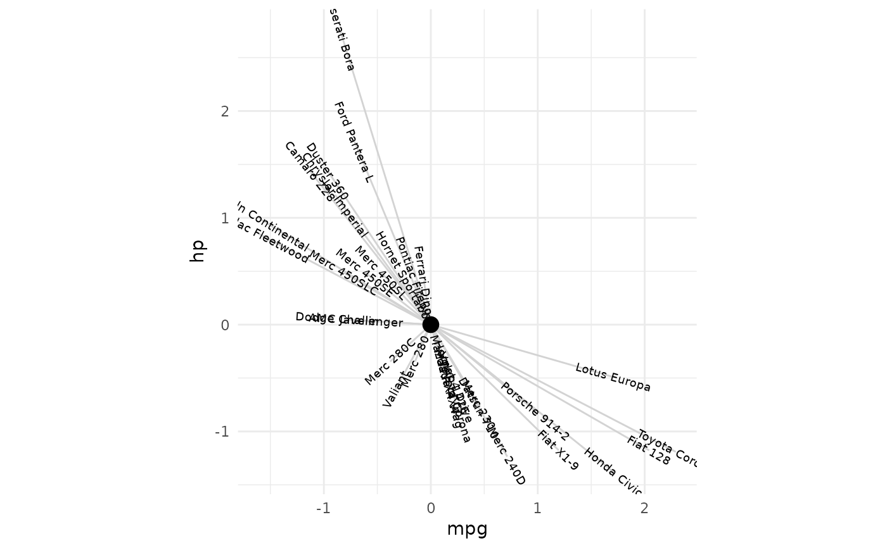
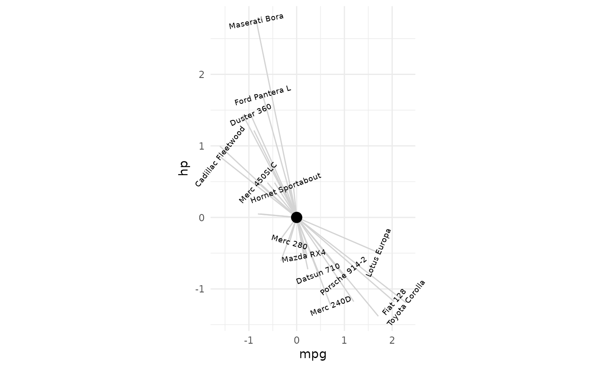

Consider moving these functions to tax_lab_style() man page/.R file.
See functions section.
textAngleCalc(xvec, yvec, max = 90, ratio = 1, perpendicular = FALSE) textHjustCalc(xvec, adjust = TRUE)
Arguments
| xvec | numeric vector of values used for x axis |
|---|---|
| yvec | numeric vector of values used for y axis |
| max | maximum absolute numeric value of angle in degrees to return (for rotating text/labels) |
| ratio | adjustment for aspect ratio of plot when setting a fixed coordinate aspect ratio with coord_fixed (advised) |
| adjust | logical, apply hjust or not (FALSE means return only 0.5) |
Value
numeric vector representing either angles to rotate geom_text labels, or hjust values
Functions
textAngleCalc: Calculate rotation of text labels for ordination plottextHjustCalc: Calculate hjust of text labels for ordination plot
Examples
library(ggplot2) library(dplyr) # create basic ggplot for labelling df <- mtcars %>% mutate(across(everything(), scale)) p <- ggplot(df, aes(mpg, hp, label = rownames(df))) + geom_segment(xend = 0, yend = 0, color = "lightgrey") + annotate(x = 0, y = 0, geom = "point", size = 4) + theme_minimal() p# calculate new variable within aes mapping non-standard evaluation p + geom_text(size = 2.5, mapping = aes(angle = textAngleCalc(mpg, hp))) + coord_fixed(ratio = 1)# equivalent: calculate variable outside aes by referring to dataframe again p + geom_text(size = 2.5, angle = textAngleCalc(df$mpg, df$hp)) + coord_fixed(ratio = 1)# fixing aspect ratio is important # see how angles may be incorrect otherwise p + geom_text(size = 2.5, mapping = aes(angle = textAngleCalc(mpg, hp)))# ratio argument allows matching angles with alternative aspect ratio p + geom_text(size = 2.5, angle = textAngleCalc(df$mpg, df$hp, ratio = .5)) + coord_fixed(ratio = .5)p + geom_text(size = 2.5, angle = textAngleCalc(df$mpg, df$hp, ratio = 1.5)) + coord_fixed(ratio = 1.5)# perpendicular argument makes text perpendicular instead of parallel p + geom_text( check_overlap = TRUE, size = 2.5, angle = textAngleCalc(df$mpg, df$hp, perpendicular = TRUE, ratio = 1.5) ) + coord_fixed(ratio = 1.5, clip = "off")# max angle limits extreme text angles p + geom_text( size = 2.5, check_overlap = TRUE, angle = textAngleCalc(df$mpg, df$hp, ratio = 2, max = 10), hjust = textHjustCalc(xvec = df$mpg, adjust = TRUE) ) + coord_fixed(ratio = 2, clip = "off")